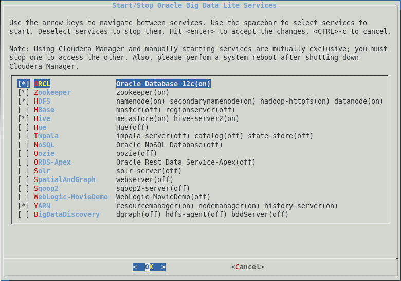
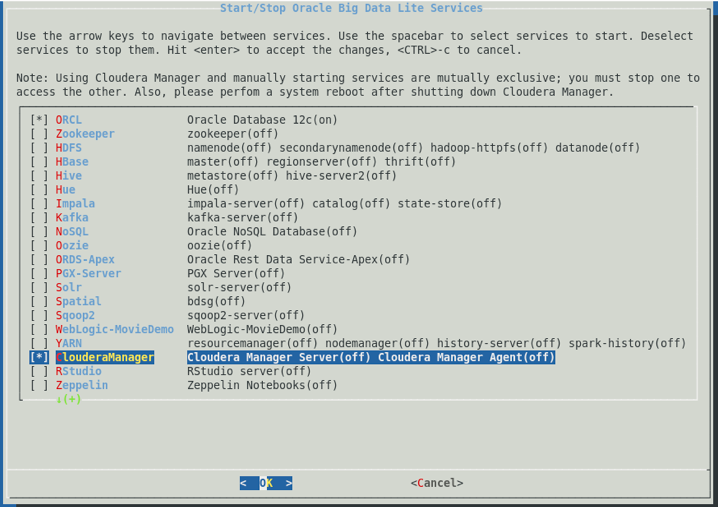
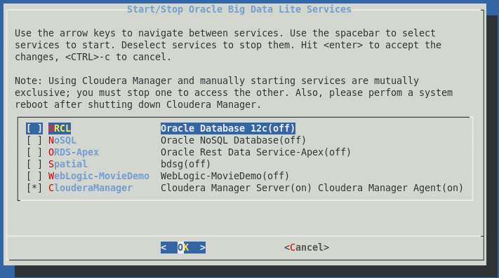

Please note: This appliance is for testing and educational purposes only; it is unsupported and not to be used in production.
Oracle Big Data Lite Virtual Machine provides an integrated environment to help you get started with the Oracle Big Data platform. Many Oracle Big Data platform components have been installed and configured - allowing you to begin using the system right away. The following components are included on Oracle Big Data Lite:
Big Data Lite includes software products that are optional on the Oracle Big Data Appliance (BDA), including Oracle NoSQL Database Enterprise Edition, Oracle Big Data Discovery, Oracle Big Data SQL, Oracle Big Data Spatial and Graph and Oracle Big Data Connectors.
There is complementary software that you may want to use that is not included in the VM.
cd /home/oracle/scripts
./install-jetty-bdsg.sh
cd /u01/oracle-spatial-graph/spatial/jetty
java -jar start.jar
| Component | Details |
|---|---|
| Linux |
root/welcome1 |
| Oracle Database 12c |
Oracle Database 12c has been configured with Oracle Multitenant. The pluggable database is orcl. Service: orcl sqlplus moviedemo@orcl/welcome1 |
| Oracle Data Integrator |
ODI is available using the tool bar menu at the top of the screen. ODI user name: SUPERVISOR |
| Oracle Big Data Discovery |
http://localhost:9003/bdd/web/home/index |
| Oracle NoSQL Database |
Administration Page: |
| Hive Metastore (MySQL) |
User name: hive |
| Hue |
http://localhost:8888 |
| WebLogic |
http://localhost:7001/console |
| RStudio (not installed) |
Install using the /home/oracle/scripts/install_rstudio.sh http://localhost:8787/ |
| Oracle SQL Developer and Data Modeler |
Oracle SQL Developer is available using the tool bar menu at the top of the screen. For Hive and Oracle Big Data SQL external table support, you need to update your SQL Developer configuration. |
| Oracle MoviePlex Demo |
Start the demo: http://localhost:7001/movieplex/index.jsp |
| Cloudera Manager |
Cloudera Manager is disabled by default. You will need at least 10GB memory allocated to the VM in order to run Cloudera Manager. It can be enabled using the Start/Stop Services application from the desktop - but will only appear as an option if the VM is configured with enough memory. http://localhost:7180 |
| Oracle Spatial and Graph |
Before running Oracle Spatial and Graph, please read
this blog post on installing and configuring (Proj.4)
Cartographic Projections Library (libproj.so). Also, see
notes above for installing and configuring Jetty, |
| Oracle Application Express |
An APEX sample application is provided that explains Oracle Big Data SQL. To view and edit the application: Workspace: moviedemo The Workspace admin has the same credentials. You can also go directly to the application using the following URL: |
| Oracle REST Data Services |
Oracle REST Data Services facilitates the development of applications against Oracle Database 12c. You can run a sample application that uses REST here: http://localhost:7070/ords_lab/
|
A simple dialog is provided to start and stop services. Please keep in mind that the Virtual Machine is preconfigured with 5GB of memory. This means that you will not want to run all of the services at the same time; shutdown services that you are not using to conserve memory.
Double-click the Start/Stop Services desktop icon to display the services dialog (or type services at the linux prompt):

The dialog displays the list of services grouped by role. The [*] signifies that the role has been started. In addition, individual services display their current status (i.e. on/off).
If your VM is configured with at least 10GB memory, you can use Cloudera Manager in Big Data Lite. Update the memory allocated to the VM using the VirtualBox Manager.
Note: Using the manual configuration and Cloudera Manager are distinct and mutually exclusive; you either manage (i.e. start, stop and configure) Hadoop services manually or thru Cloudera Manager. Hadoop configuration changes made in Cloudera Manager are not propagated to the manual configuration (and vice versa).
To enable Cloudera Manager, invoke the services dialog as described in the previous section and stop all Hadoop services. Invoke services again and you will notice a ClouderaManager services option:

Select the option and then click OK. You can now use Cloudera Manager to manage Hadoop. The next time you invoke the services application, you will no longer be able to manually start/stop Hadoop services until you shut down Cloudera Manager:
If your VM is configured with at least 12GB memory, you can use Big Data Discovery in Big Data Lite.
Note: Running Cloudera Manager and Big Data Discovery at the same time is not supported in the VM.
Oracle has developed numerous demonstrations and hands-on-labs around a fictitious company called "Oracle MoviePlex". Oracle MoviePlex is an on-line movie streaming company. Customers log into Oracle MoviePlex - where they are presented with a targeted list of movies based on their past viewing behavior. Because of this personalized experience and reliable and fast performance, customers spend a lot of money with the company and it has become extremely profitable :).
The Oracle Big Data Platform was used to build this demonstration. All of the software and data required to run the demo and hands-on labs are in this virtual machine. Go to the Oracle Technology Network to access these labs and videos.
Oracle would like to acknowledge the data providers for the movie demo.